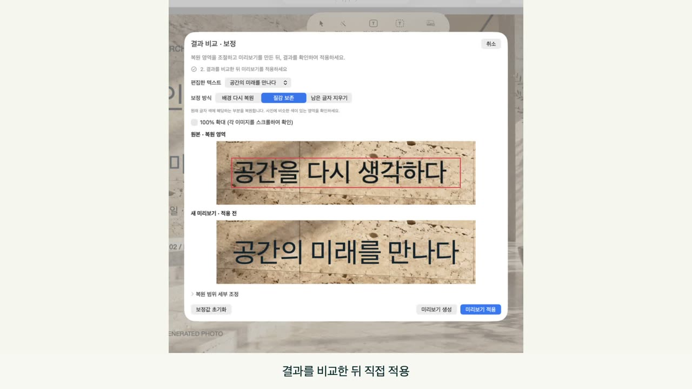
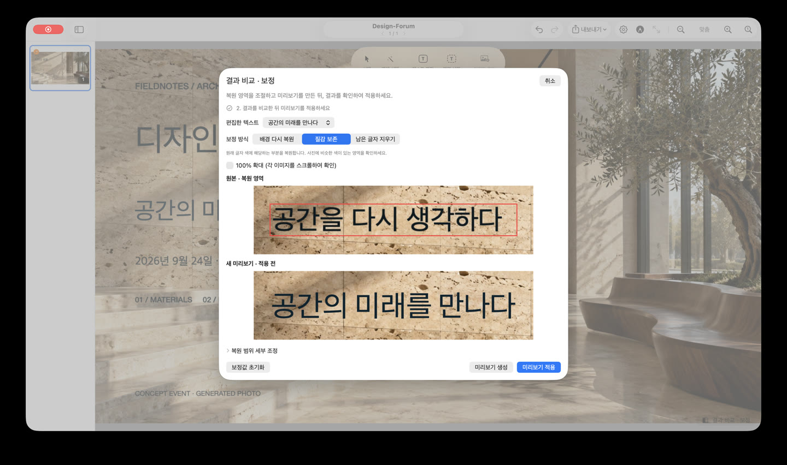
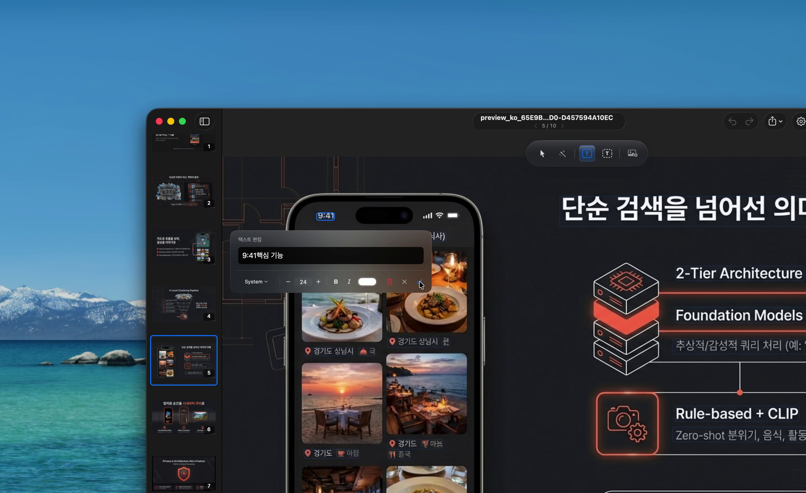
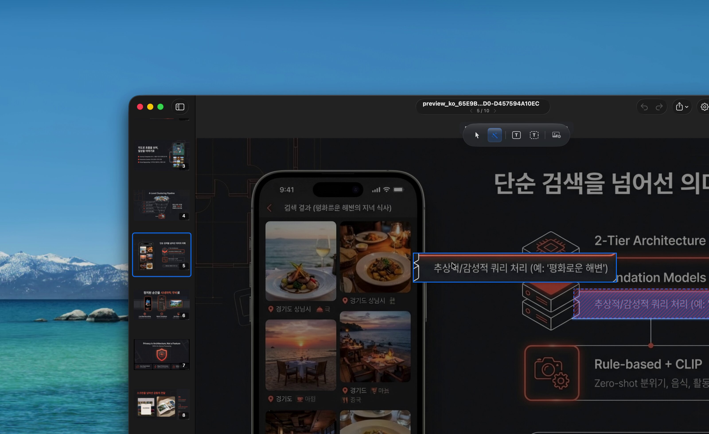
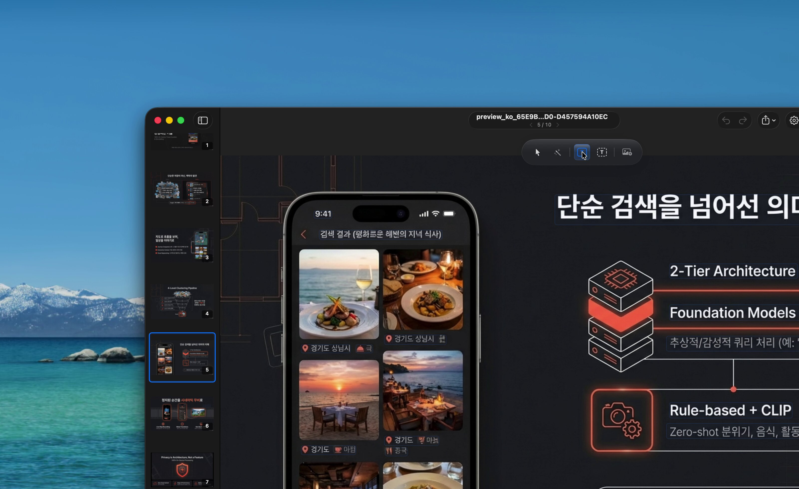
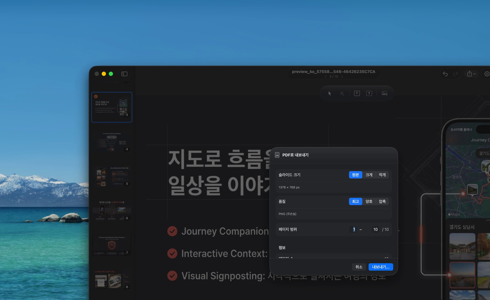

01
필요한 글자를 선택하세요
PDF나 이미지를 열고 텍스트 편집을 선택한 뒤 OCR 영역을 두 번 클릭하세요. 설정에서 인식 언어를 선택할 수 있습니다. 작은 글자·장식 글꼴·저해상도 이미지는 수동 조정이 필요할 수 있습니다.
{kind=link}

날짜를 고치고, 제목을 바꾸고, 발표 자료 전체를 다시 만들지 않고 슬라이드를 업데이트하세요. 문서는 Mac 안에서 처리하며 편집·내보내기는 무료입니다.
PDF나 이미지를 열고 텍스트 편집을 선택한 뒤 OCR 영역을 두 번 클릭하세요. 설정에서 인식 언어를 선택할 수 있습니다. 작은 글자·장식 글꼴·저해상도 이미지는 수동 조정이 필요할 수 있습니다.

1.2의 비교 및 보정에서는 더 큰 미리보기, 복원 범위 조정, 질감 보존 보정을 제공합니다. 미리보기를 생성해 원본과 비교한 뒤 직접 적용하세요. 가려진 디테일을 정확히 복원하지는 못합니다.

글꼴·크기·색상·정렬을 선택하고 일부 글자에 서식을 적용하세요. 사각형·타원·화살표·곡선을 추가할 수 있습니다. 1.2에서는 자간도 조정할 수 있으며 원래 글꼴이 자동 복구되지는 않습니다.

온디바이스 영역 분할로 객체를 선택해 이동하거나 삭제하세요. 사진의 작은 디테일이나 반복 무늬에서는 원래 위치의 채움 결과를 확인하세요.

편집은 별도 레이어로 관리합니다. 레이어 표시를 켜고 끄거나 삭제하고 실행 취소·다시 실행을 사용할 수 있습니다. 내보내기는 새 파일을 만듭니다. 1.2에서는 OCR 실행 취소·다시 실행과 미저장 편집의 닫기 경고를 개선했습니다.

편집된 PDF, PNG/JPEG 이미지, MP4 슬라이드쇼, GIF로 저장하세요. 1.2에서는 파일 메뉴의 PDF 내보내기 또는 Command-Shift-E를 사용할 수 있습니다. 진행 중인 텍스트 수정은 먼저 마무리하세요.

질감이 있는 사진 위의 원본 글자와 실제 편집 결과를 비교하세요.


생성한 샘플 이미지를 실제 온디바이스 엔진으로 처리했습니다. 앱 스크린샷이 아닌 슬라이드 출력물입니다. 배경에 따라 품질이 달라지므로 내보내기 전에 결과를 확인하세요.
{kind=link}
{kind=link}
{kind=link}
{kind=link}
{kind=link}